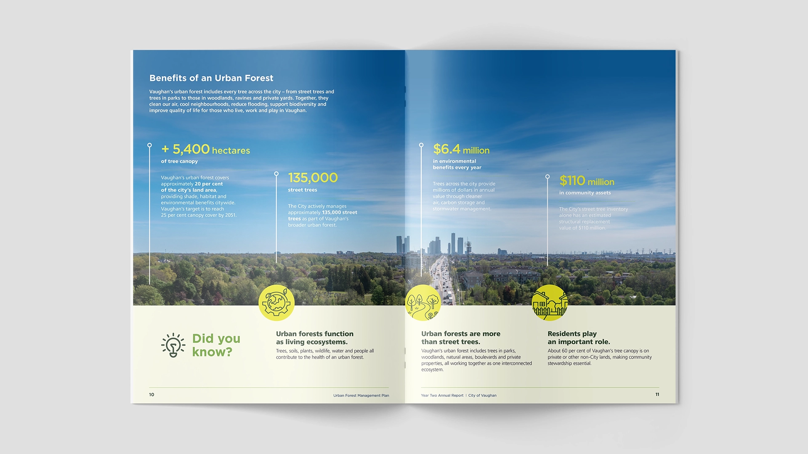
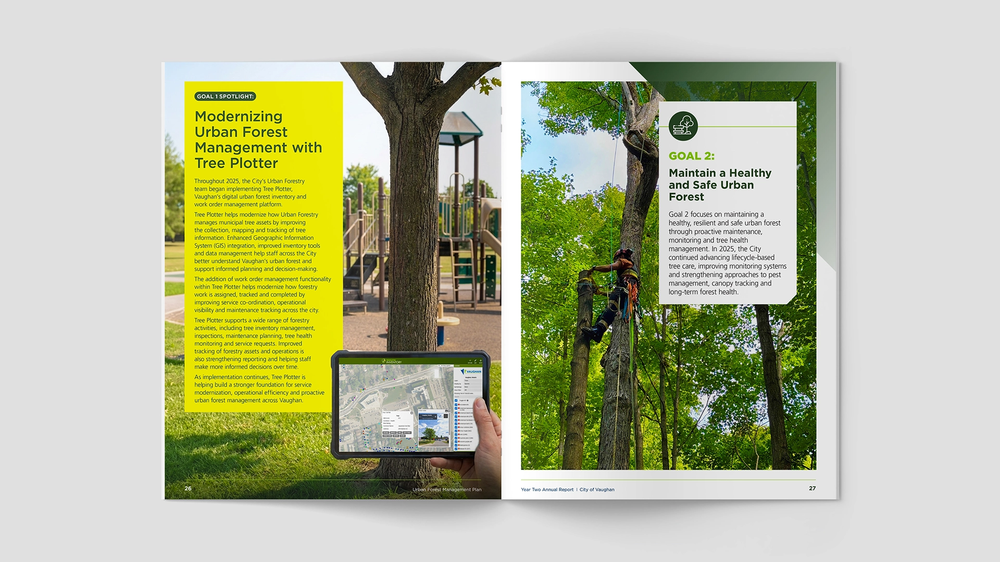
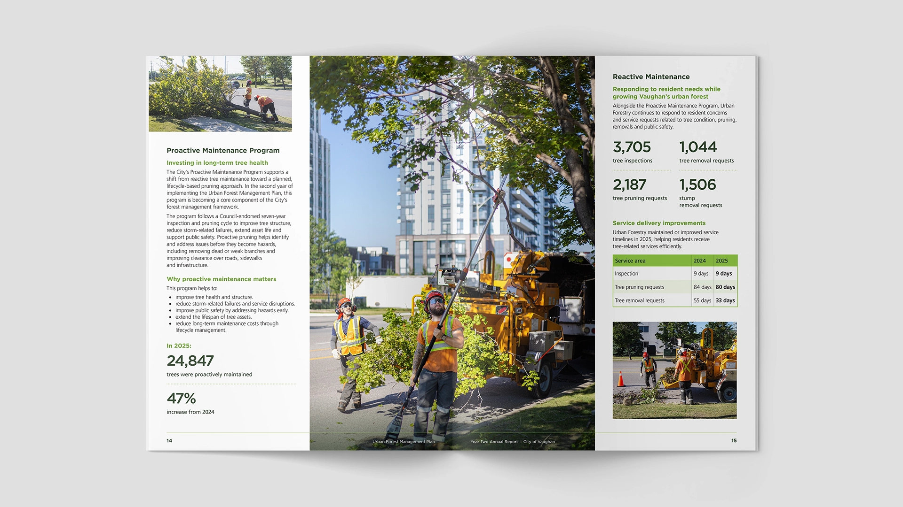
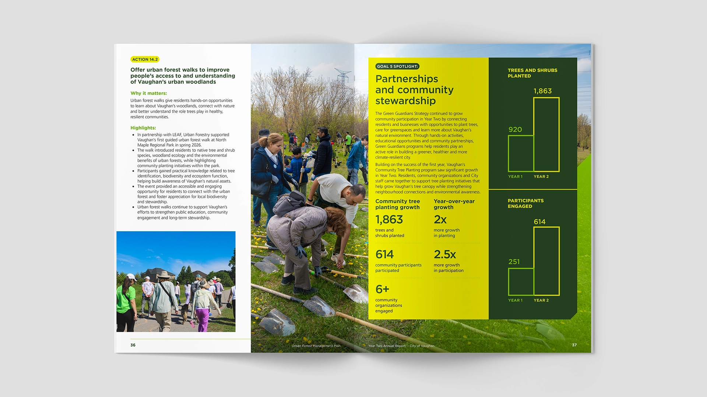

The City needed the second annual report for its Urban Forest Management Plan. These documents are typically dense with operational data, goals, and progress updates — and easy to overlook. The goal was to present a full year of work clearly and credibly for senior stakeholders, while raising the visual standard.

I treated the report as a strategic communication piece rather than a routine progress document. The direction prioritized strong photography of Vaughan’s urban forest and field operations, a restrained system aligned with the City brand, and a hierarchy that puts key results and goal progress first.


Large impact figures, clean section structure, and consistent spacing formed the core system. Key decisions included leading sections with large-scale photography before denser content, and giving metrics and goal progress clear visual priority so senior readers can absorb the most important results quickly. The design stays firmly within the City’s brand language while making the report feel more deliberate. The same approach supports both the printed report and related presentation materials.

The report is more focused and intentional than a typical municipal progress document. It presents Year Two results with clarity and sets a higher standard for how the Urban Forest Management Plan is communicated going forward.